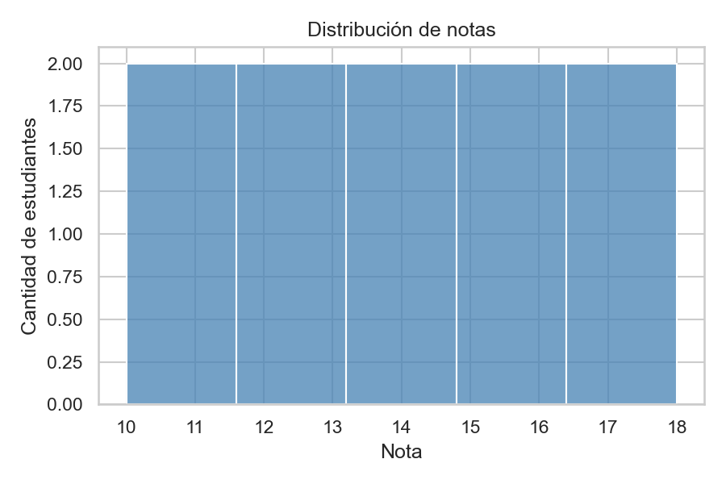
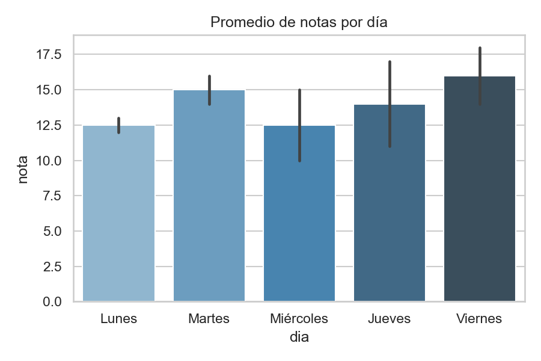
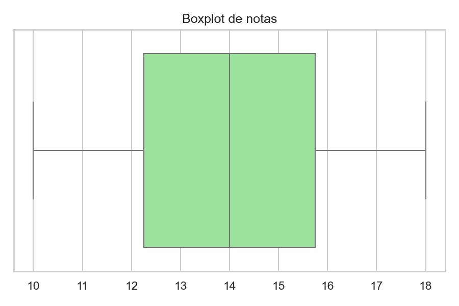
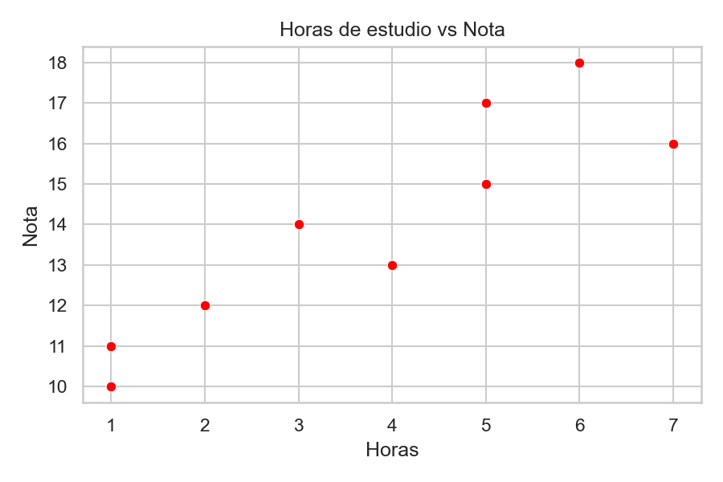

Archivo del notebook
Este ejercicio se basa en el archivo:
# LIBRERÍA: Seaborn
# Para qué sirve: hacer gráficos estadísticos bonitos con pocas líneas
# Se aplica en: análisis de notas, ventas, encuestas, salud
import seaborn as sns
import matplotlib.pyplot as plt
notas = [12, 14, 15, 11, 18, 13, 16, 10, 17, 14]
cursos = ["Lunes","Martes","Miércoles","Jueves","Viernes",
"Lunes","Martes","Miércoles","Jueves","Viernes"]
sns.set_theme(style="whitegrid")
sns.histplot(notas, bins=5, color="steelblue")
plt.title("Distribución de notas")
plt.show()
import pandas as pd
df = pd.DataFrame({"nota": notas, "dia": cursos})
sns.barplot(data=df, x="dia", y="nota", palette="Blues_d")
plt.title("Promedio de notas por día")
plt.show()
sns.boxplot(x=notas, color="lightgreen")
plt.title("Boxplot de notas")
plt.show()
horas = [2, 3, 5, 1, 6, 4, 7, 1, 5, 3]
sns.scatterplot(x=horas, y=notas, color="red")
plt.title("Horas de estudio vs Nota")
plt.show()
print("✅ Ejercicio Seaborn completado")Gráficos generados

Histograma
Muestra cuántas veces se repite cada nota.

Gráfico de barras
Compara el promedio de notas según el día.

Boxplot
Representa la dispersión y la mediana de las notas.

Scatter plot
Relaciona las horas de estudio con la nota obtenida.
Qué se trabajó en este ejercicio
- Uso de Seaborn para crear gráficos estadísticos.
- Aplicación de estilos visuales con set_theme.
- Generación de gráficos como histograma, barras, boxplot y dispersión.
- Visualización de datos con Matplotlib y Pandas.